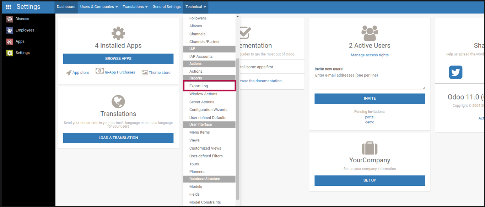
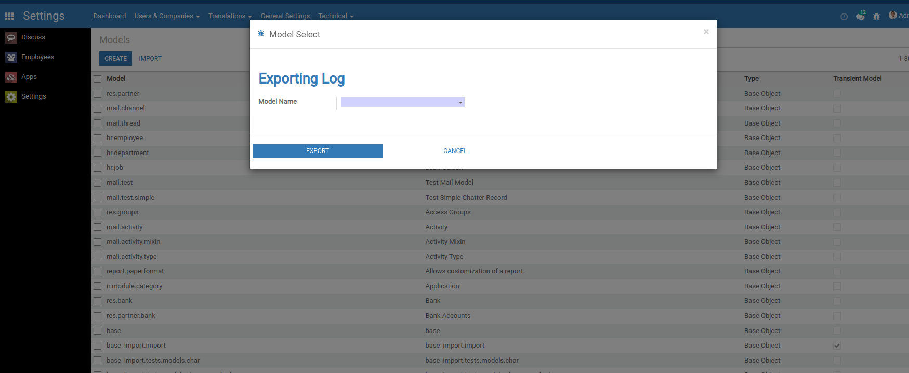

This module is used to generate xls file for log values by model wise. It shows the changes of new values from
previous. We can also see the responsible person who has changed the value and also able to see the time.
Features
Enterprise and Community compatible
Available in Odoo Community and Enterprise
Generating xls file for log values
Screenshots
Generate XLS file for Log values
First of all, You have to go to Technical from Settings.
From under the report select Export Log.

When you select Export Log you can see a wizard.

From there you have to select the model name for which you want to generate the log file.
Then download the xls file by clicking on the download button.


 Enterprise and Community compatible
Enterprise and Community compatible